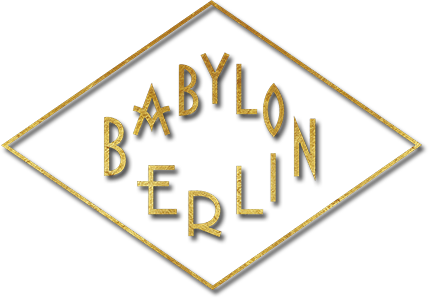
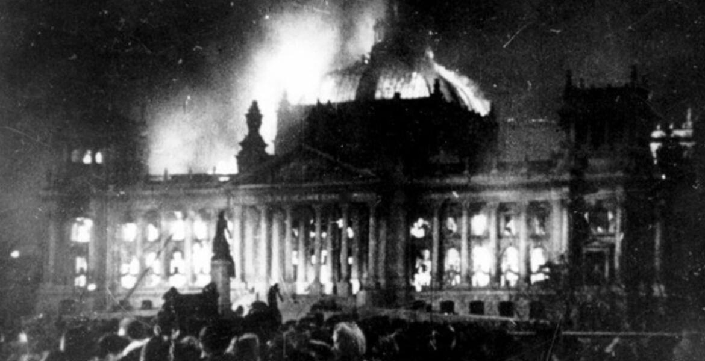

Babylon Berlin est une série télévisée allemande en cinq saisons, diffusée pour la première fois en 2017 sur la chaîne Sky Deutschland, et qui a connu son épilogue le 10 septembre 2026. La série suit les aventures de Gereon Rath et Charlotte Ritter, respectivement jeunes inspecteur et sténographe au sein de la police berlinoise, dans les dernières années de la république de Weimar.
La capitale allemande est, en 1929, une ville pleine de contrastes : fêtes, cabarets, liberté et modernité y côtoient pauvreté, corruption, violence et montée de l'extrémisme. Les premières saisons de la série illustrent ces contrastes en plaçant ses personnages au cœur des enjeux politiques, sociaux et économiques de l’époque.
Gereon Rath est issu d'un milieu relativement aisé (son père est haut fonctionnaire de police dans sa ville d'origine, Cologne) mais c'est aussi un vétéran de la Première Guerre mondiale, traumatisé par les combats et la mort de son frère au front. Tout au long de la série, il sera partagé entre ses convictions personnelles, son sens du devoir et les différentes pressions politiques qui s'exercent sur lui dès son arrivée en poste... tout en devant gérer d'intenses symptômes de stress post-traumatique.
Charlotte, quant à elle, est une jeune femme issue du milieu populaire berlinois, en permanence confrontée à la pauvreté et aux inégalités sociales dont elle cherche à s'émanciper grâce à son talent et à sa débrouillardise. C'est aussi une habituée des pistes de danse, dont les nombreuses scènes viennent nous rappeler que les années folles sont aussi des années de libération des mœurs. Elle représente donc cette jeunesse libre et ambitieuse, soucieuse de s'affranchir des normes traditionnelles de l'époque et des contraintes sociales qui pèsent sur elle.
La deuxième partie de la série nous plonge cette fois-ci dans le cœur des tensions politiques du début des années 1930. Des journalistes tentant de sonner l'alarme auprès de la population aux nazillons qui peuplent progressivement les rues de Berlin, en passant par la haute bourgeoisie allemande qui essaye de se mettre à l'abri en prêtant allégeance à un futur gouvernement irrespectueux du droit, tous les personnages qui apparaissent au fil des épisodes nous donnent une vision plus globale encore des enjeux de cette période.
La dernière saison se concentre sur deux mois d'intense instabilité, janvier et février 1933 : Les oppositions politiques sont de plus en plus réprimées, Adolf Hitler est nommé chancelier le 30 janvier 1933 par le président Hindenburg à la suite de négociations politiques avec les milieux conservateurs (qui pensent pouvoir encadrer et contrôler son gouvernement) et l'incendie du Reichstag (le Parlement allemand), climax final du dernier épisode, est utilisé comme prétexte pour accuser à nouveau les oppositions politiques de trahison.
Cet épilogue, je l'ai découvert il y a quelques jours, et il m'a posé question.
Dans la série, un personnage appelé Marinus van der Lubbe, syndicaliste néerlandais, proche du parti communiste mais dont il réprouve le manque d'actions fermes et violentes, est filmé tentant de mettre le feu à plusieurs bâtiments publics les jours précédant l'incendie du Parlement allemand. Il est aussi filmé en train d'être approché par des hommes identifiés comme appartenant au parti nazi et qui semblent réussir à profiter de ses capacités intellectuelles visiblement limitées afin de le manipuler et de le convaincre de mettre le feu au Reichstag. On le voit entrer par effraction dans le bâtiment et tenter d'y mettre maladroitement le feu, mais c'est au final une unité S.A. (la milice paramilitaire nazie) qui vient déclencher l'incendie. Marinus van der Lubbe sera arrêté, utilisé comme bouc émissaire, puis condamné par une loi rétroactive à la guillotine et exécuté en 1934.

Devant ces scènes, d'anciens souvenirs de cours me remontent : s'il est factuellement correct d'affirmer que les nazis et le pouvoir en place ont utilisé cet incendie comme prétexte pour lancer une vague de répression sans précédent dans le pays (contre la presse, les opposants politiques, les Juifs...), est-il historiquement correct que cet incendie a bien été déclenché par la milice nazie d'Hitler, ou est-ce un choix délibéré des auteurs que de prendre position?
Eh bien il se trouve... qu'il n'existe encore aujourd'hui pas de consensus historique, l'enquête n'ayant pas pu être menée à son terme au vu du contexte politique. Trois thèses prédominantes se sont partagées le devant de la scène: